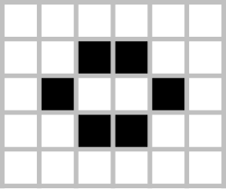
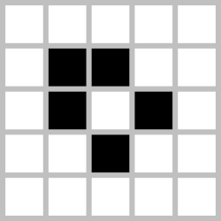
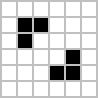
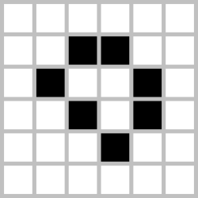
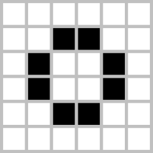

康威生命游戏
三条最简单的规则，演化出无限复杂的图案——一个关于涌现、自组织和计算本质的经典实验。
细胞模拟器
活细胞数量变化
三条规则
生存
活细胞周围有 2 或 3 个活邻居 → 继续存活。太少会孤独致死，太多会拥挤致死。
死亡
活细胞周围少于 2 个或多于 3 个活邻居 → 死亡。群体需要恰到好处的密度才能维持。
诞生
死细胞周围恰好 3 个活邻居 → 新细胞诞生。生命的火种，在邻里的临界点上被点燃。
John Horton Conway 在 1970 年发布这组规则时，他自己也不知道它会演化出什么。60 年过去了，研究者们还在这个规则空间里发现新的图案。
Conway, J. H. (1970). "The Game of Life." Scientific American, 223(4), 120–123.
四大图案类型
与其记抽象名词，不如直接看维基百科里这些经典图案长什么样、会怎么动。下面按最常见的几类和一些代表例子来展示。
🪨 静止物


进入稳定状态后，下一代和这一代完全一样，不再变化。
🔄 振荡器



不会平移位置，但会按固定周期在几种形态之间来回切换。
🚀 飞船


会周期性地恢复原来的外形，但整体位置会不断向前平移。
🏭 枪与增长型结构


这类结构不会只是原地循环，而会持续产出新的飞船或子结构，让整体规模不断扩大。
🧩 其他经典图案


除了最常见的三大类，维基百科里还收录了很多有名字、也很有辨识度的经典结构，适合直接拿来对照观察。
涌现：秩序从混沌中浮现
用随机按钮生成一片杂乱的初始状态，然后开始运行。观察发生了什么：
剧烈淘汰
前 10-30 代，大量随机细胞因密度不当迅速死亡。活细胞数急剧下降，这有点像数字世界里的"自然选择"。
秩序涌现
淘汰后存活下来的结构开始展现规律：小振荡器、静止块、滑翔机——从完全的随机中，自动生成了有序结构。
动态平衡
经过 100-500 代，系统通常收敛到一个由静止物、振荡器和偶尔出现的飞船组成的稳定状态。没有中心调控，没有设计者。
关键洞察
系统的所有复杂度都来自三条底层规则。没有任何一个细胞"知道"自己是滑翔机、振荡器或静止物的一部分——这些高层结构是观察者从底层交互中识别出来的模式。这种"高层现象来自底层规则"的特性，正是涌现的核心定义。
最令人震惊的事实：它是图灵完备的
通过组合滑翔机、滑块枪和反射器，你可以在网格上构造出逻辑门（AND、OR、NOT）、寄存器、时钟信号——进而搭建一台完整计算机。
这就意味着：如果某个问题原则上可以被通用计算机计算，它也可以在生命游戏中被实现。代价是速度极慢，可以把它理解成一台频率只有 "0.01 Hz" 的计算机；但从理论计算能力上看，它与通用计算机是等价的。
Berlekamp, E. R., Conway, J. H., & Guy, R. K. (1982). Winning Ways for Your Mathematical Plays, Volume 2. Academic Press. Chapter 25 展示了如何在生命游戏中构造逻辑电路。
2016 年，一个团队在生命游戏里搭了一台 8-bit 可编程计算机，时钟频率约 1/90 Hz。2018 年，有人甚至在里面实现了《俄罗斯方块》——整个游戏逻辑、键盘输入、屏幕输出，全部由细胞自动机完成。
常见图案的模拟数据
以下数据由本页面模拟器实际运行得出。选择一个预设图案、运行到底观察其演化轨迹。
| 图案 | 初始细胞数 | 稳定代数 | 最终细胞数 | 类型 |
|---|---|---|---|---|
| 滑翔机 | 5 | — | 5 (每4代平移) | 飞船 |
| 闪光灯 | 3 | 1 | 3 (周期2) | 振荡器 |
| 信标 | 8 | 1 | 8 (周期2) | 振荡器 |
| 脉冲星 | 48 | 3 | 48 (周期3) | 振荡器 |
| 高斯帕滑翔机枪 | 36 | — | 持续增长 | 枪 |
| 轻型太空船 | 9 | — | 9 (每4代平移) | 飞船 |
| Diehard | 10 | 130 | 0 (灭绝) | 瞬态 |
| 橡果 (Acorn) | 7 | 5,206 | 633 | 瞬态→稳定 |
| R-Pentomino | 5 | 1,103 | 116 | 瞬态→稳定 |
（以上数据由前端 demo 实际计算得出，可在上方模拟器中加载预设图案自行验证。网格大小 80×50，环形边界。）
橡果的惊人演绎
7 个细胞起步，演化 5,206 代，最终产出 633 个活细胞，产生了至少 13 个滑翔机、若干个闪光灯和各种静止物——从一个不起眼的起点，演化成了复杂而丰富的结构组合。没有任何指令告诉它要这样做。
常见疑问
Q：为什么生命游戏这样简单的规则，也能实现计算？
因为生命游戏满足图灵完备所需的关键条件：它有存储（细胞状态）、逻辑操作（通过滑翔机碰撞构造与、或、非门），也可以形成节拍信号（如振荡器）。它提供了一个极简的并行计算模型：大量小单元各自只执行简单规则，却能组合出复杂计算。这和真实计算机在底层依靠简单规则协同工作的方式，在原理上并没有本质区别。
Q：随机初始化后活细胞密度最终收敛到多少？
取决于网格大小和初始密度。以本模拟器 80×50、初始密度 30% 为例：前十代会急剧下降，密度从 30% 快速降至约 5-8%。随后系统进入振荡和整理阶段，最终稳定后的密度大约在 2-4% 之间。
Q：Life 和真实生物有什么关系吗？
没有直接关系。Life 没有 DNA、没有代谢、没有进化机制。但它在两个层面启发了生物学研究：（1）自组织——展示了简单局部规则如何产生复杂全局行为；（2）形态发生——Alan Turing 在 1952 年用类似的反应-扩散方程解释了动物皮毛纹样的形成。Life 更像是"复杂性的最小模型"，而非"生命的模拟"。
延伸阅读
原始发表文章，康威在杂志的游戏数学专栏中首次向公众介绍了 Life。
第 25 章展示了如何在 Life 中构造逻辑电路，证明了其图灵完备性。
Martin Gardner 的同名专栏，和 Conway 的文章同期发表，是将 Life 推向大众的关键推手。
在 Life 中实现了一台完整通用图灵机，所有组件（寄存器、ALU、控制逻辑）均由滑翔机和反射器构造。
汇集了 Life 相关的数学、物理、计算机科学研究，是深度了解 Life 的最佳教材之一。